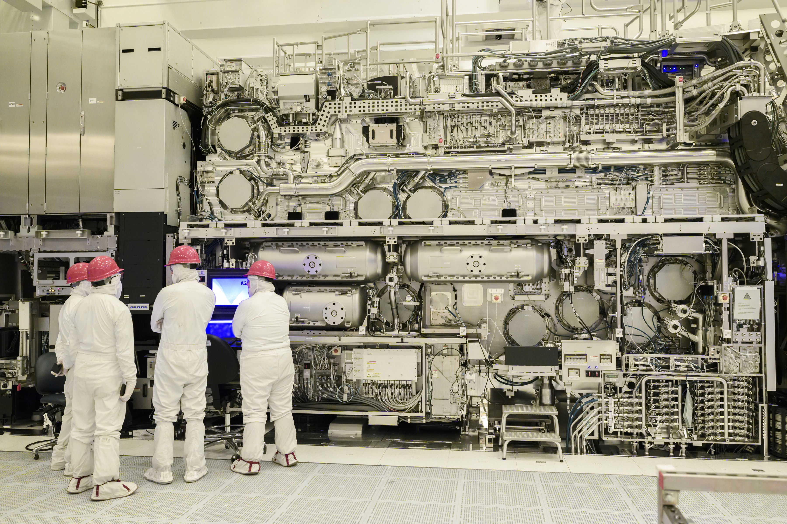
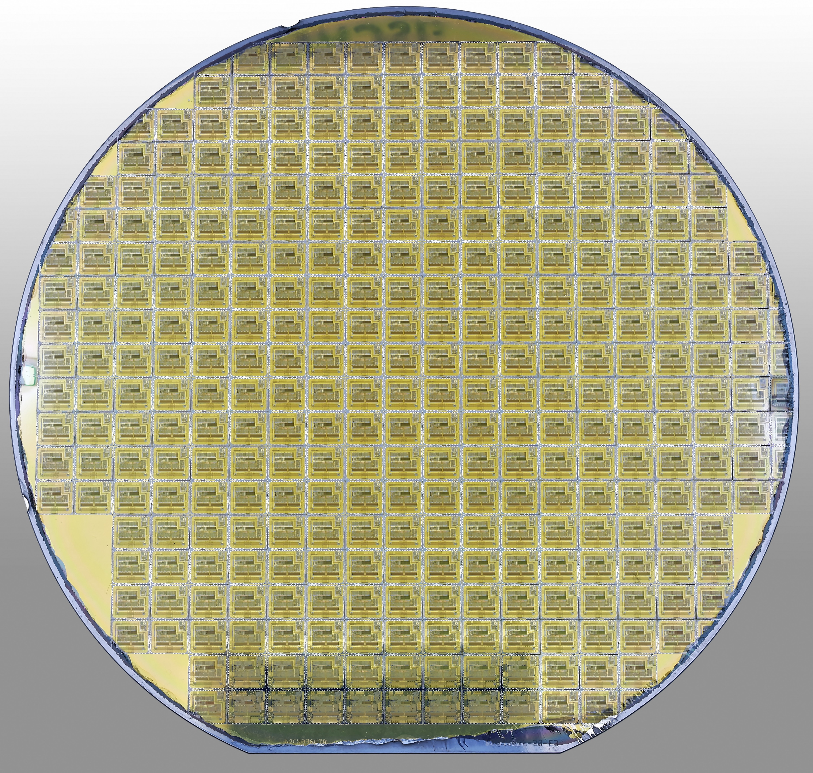

The machine
$380 million
the price of one, from the only company on Earth that makes it
The most complicated machine ever built
Every advanced chip is printed by one kind of machine, made by one company, ASML. A High-NA EUV system costs around $380 million and makes its light by firing a laser at 50,000 droplets of molten tin a second.

The wafer
300 mm
one disc, sliced from a single crystal of silicon
A mirror grown from melted sand
The machine prints onto a 300 mm disc of silicon, refined to about 99.9999999% pure, patterned with hundreds of identical chips at once.

The chip
~100,000,000,000
transistors, on a die the size of a fingernail
One chip, cut from the wafer
A single die carries tens of billions of transistors, with thousands of contacts to the outside world around its rim.
The wiring
tens of km
of copper, folded into one fingernail of silicon
A city of copper in stacked floors
Below the resolution of light, no photograph can follow. Between the contacts and the switches runs the wiring: copper threads in more than a dozen stacked layers. Unspooled, the wires in one chip would run for tens of kilometers.
The transistor
86,000,000,000
neurons in your brain, and a top chip now rivals the count
The switch, smaller than a virus
One transistor is a few dozen nanometers across. A chip packs around 100 billion; your brain holds about 86 billion neurons, though its ~100 trillion connections still dwarf anything we print.
The atom
0.5 nm
across one cell of the silicon crystal
Where the picture ends and the atoms begin
At the floor is the silicon crystal, atoms in a lattice that repeats about every half a nanometer. The whole $380 million machine exists to place these dots, a few atoms at a time, a hundred billion times over.
{kind=link}